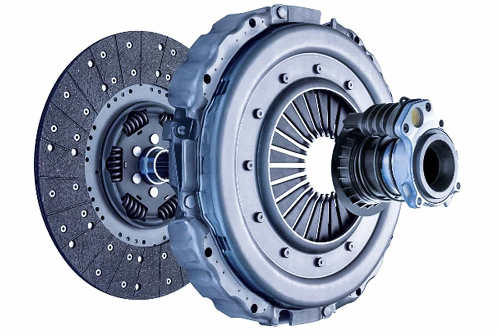

Clutch System
The clutch system connects and disconnects the engine from the transmission to allow smooth gear changes and vehicle start/stop without stalling.
Mechanical Process
- Clutch Pedal: The driver presses to disengage the clutch.
- Pressure Plate: Applies force to the clutch disc to engage power transfer.
- Clutch Disc: Friction disc that transmits torque from the engine to the transmission.
- Release Bearing: Releases pressure from the pressure plate when the pedal is pressed.
Core Components
- Flywheel: Mounted on the engine crankshaft, provides a friction surface for the clutch disc.
- Clutch Disc: Transfers torque by friction between flywheel and pressure plate.
- Pressure Plate: Maintains pressure to keep the clutch engaged.
- Release Bearing: Allows disengagement of the clutch when pressed.